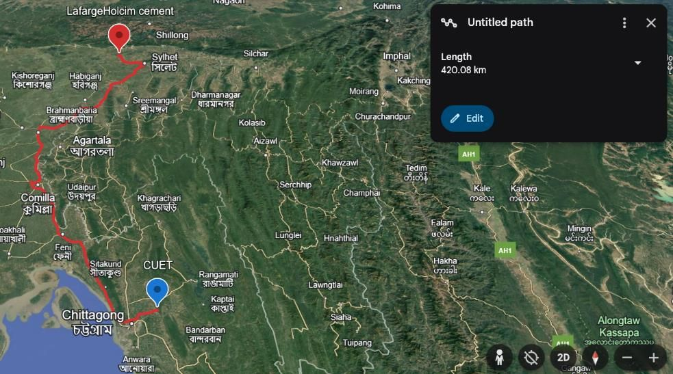
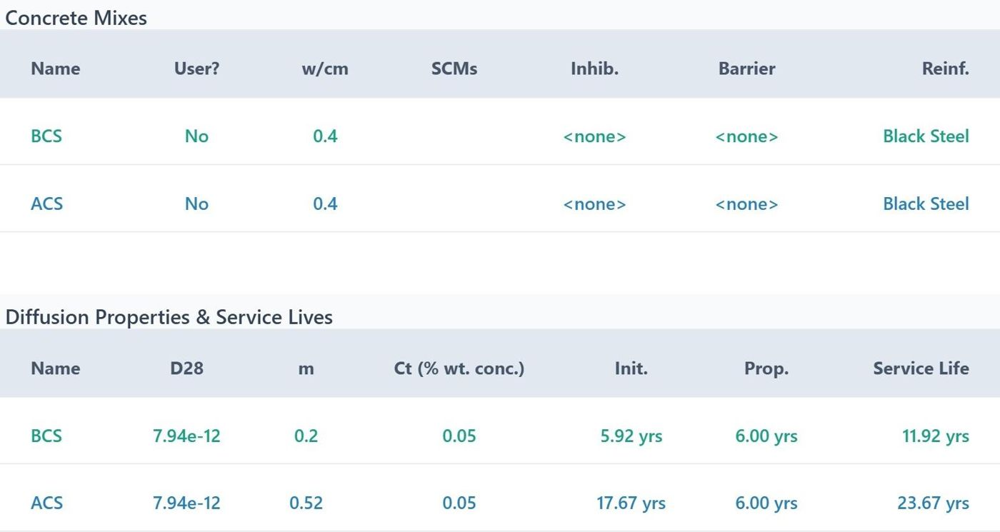

8th place · international
Design and life cycle analysis of eco-concrete using SCMs under transportation and virgin-material constraints
After winning the internal CUET round, our six-member team (CUETX) represented CUET at the American Concrete Institute's international student competition. We designed a concrete mix to ACI 211.1 using only materials sourced within the competition's transport limits, then optimized 39 trial blends of fly ash, silica fume and GGBS across three sourcing scenarios.
We modelled chloride-induced service life in Life-365 and ran a cradle-to-gate LCA across five impact categories. The final mix replaced 40% of cement with fly ash from the Matarbari power plant.
Faculty advisor: Prof. Dr. G. M. Sadiqul Islam · ACI announcement
Final mix · per m³
Cement replaced by fly ash40%
Water–binder ratio0.40
Unit weight2425 kg/m³
Service life (Life-365)11.9 → 23.7 yr
Global warming potential432.9 → 295.0 kg CO₂e
Fossil fuel depletion242.2 → 168.1 MJ
Avg. impact reduction23.6%

